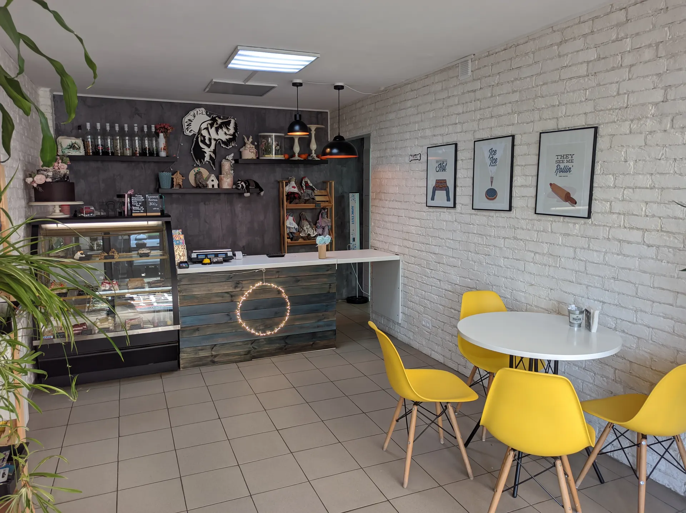
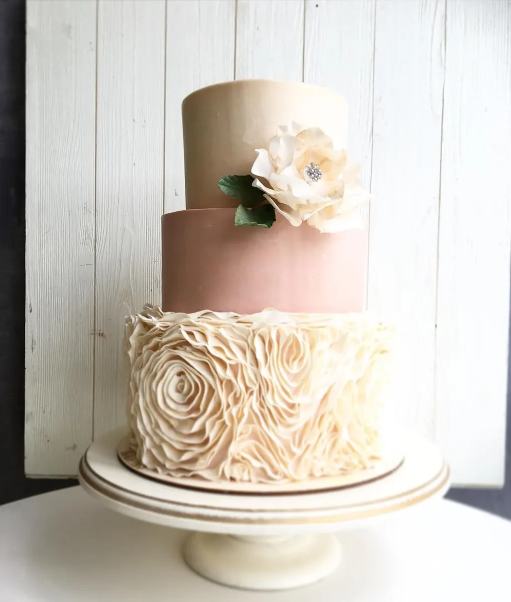
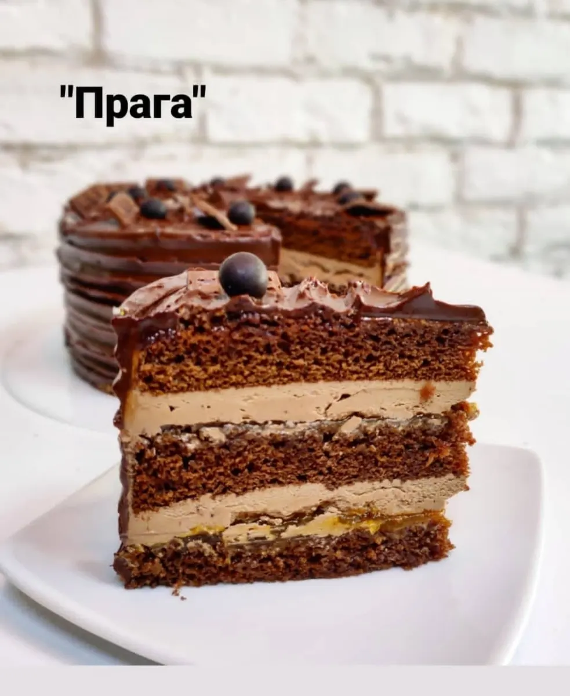

Кондитерская и кофейня на Шишкова, 72/4
Торты, десерты и кофе в Воронеже
Торты на заказ с дизайном под праздник, десерты по кусочкам, меренговый рулет и кофе с собой. Самовывоз и доставка собственным курьером.

- 4,7 на Яндекс.Картах, 61 оценка
- Десерты по кусочкам и торты на заказ
- Пн–Сб с 10:00 до 20:00, воскресенье выходной
Что у нас можно заказать и купить
Цену торта называем при заказе: она зависит от размера, начинки и оформления.
Торты на заказ
- Торт на заказлюбая тема и дизайнуточнить
- Свадебный тортуточнить
- Расписной тортуточнить
Десерты по кусочкам
- «Наполеон»уточнить
- «Красный бархат»уточнить
- «Три шоколада»уточнить
- «Прага»уточнить
- «Сникерс»уточнить
- Меренговый рулетуточнить
- Кофе с собойуточнить
Как заказать торт
- 01
Повод и дата
Напишите в Telegram, позвоните или оформите предзаказ онлайн.
- 02
Тема и дизайн
Расскажите, какой торт хотите: тему, цвета, начинку. Пришлите пример.
- 03
Самовывоз или доставка
Заберите торт на Шишкова, 72/4 или закажите доставку курьером.


Что пишут клиенты
С душой и в срок
«Вкусно, красиво, с душой, в срок изготовят», пишет Алёна Диденко.
Тема на заказ
«Торт на пиратскую тему просто восторг!», пишет Anna Z.
Быстро
«Все всегда во время успевают сделать заказ меньше чем за сутки», пишет Дмитриева Екатерина.
Меренговый рулет
«Недавно пробовали меренговый рулет и мне кажется, что вкуснее ничего и никогда не ела», пишет Екатерина.
Отзывы с Яндекс.Карт
«Искренне и от всей души рекомендую кондитерскую заказываем постоянно торты здесь, ни разу не разочаровались: вкусно, красиво, с душой, в срок изготовят. Спасибо Виктории.»
Алёна Диденко · 14 января 2024
«Несколько раз заказывала торт в кондитерской. Неоднократно приезжала за пирожными. Всегда все очень вкусно. Торт на пиратскую тему просто восторг! И Украшения, и начинка и свежие фрукты сверху!»
Anna Z. · 6 ноября 2023
«Обожаю эту кондитерскую! Просто нет слов, как там все вкусно делают! Всегда всё свежее, качественное, красивое. Много раз заказывала торты, капкейки, просто пироженные покупала, и всегда 10 из 10! Рекомендую! Лучше в нашем городе не найти! И все вкусности по приятным ценам!»
Екатерина Денисова · 16 октября 2022
Отзывы с карточки на Яндекс.Картах, без правок.
Контакты
- Адрес
- улица Шишкова, 72/4, Воронеж
- Часы
- пн–сб, с 10:00 до 20:00, воскресенье выходной
- Телефон
- +7 (952) 952-45-45